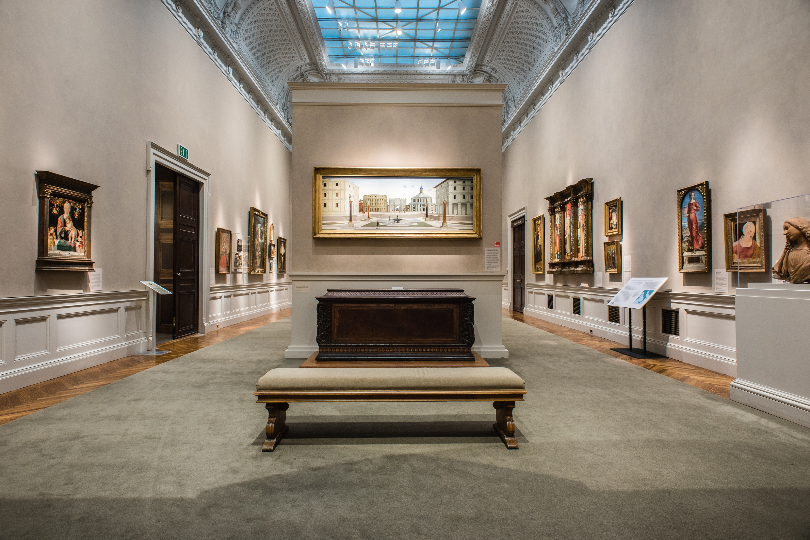

Home
Artifacts
About

The World Museum
The World Museum is the largest collection of artifacts. Many of these artifacts are of cultrual and scientific significance. This website serves as public access to these artifacts, and the techniques used to digitise them.